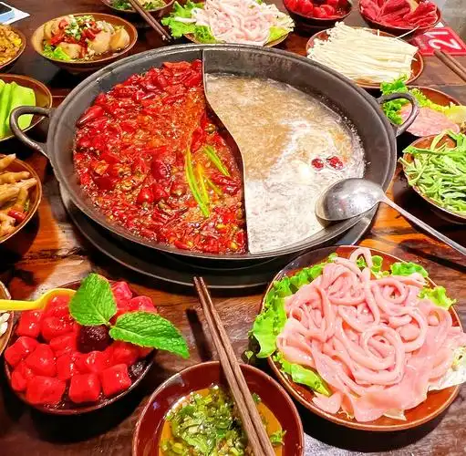
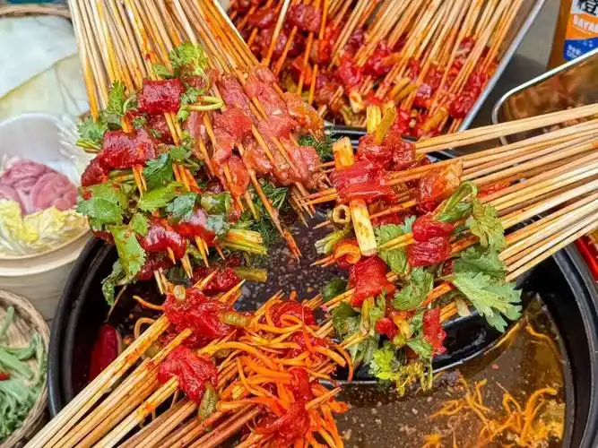
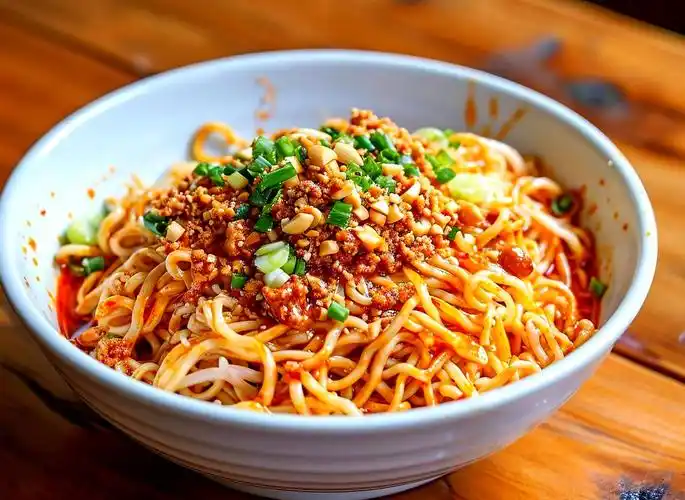
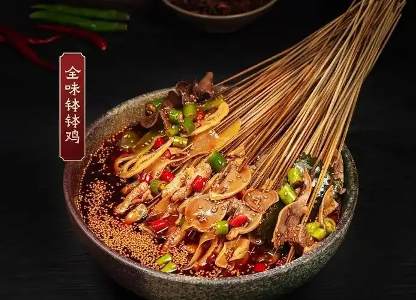
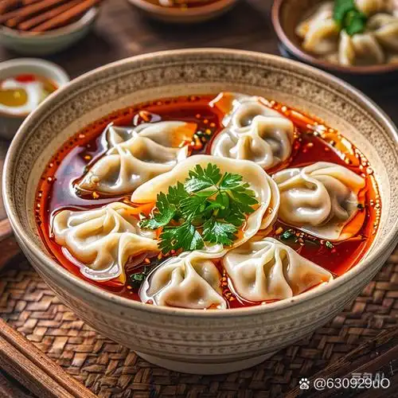
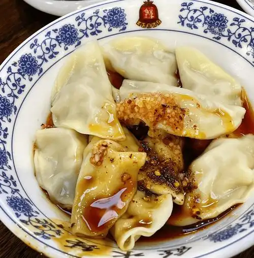

味觉数据矩阵
[ DATA_TABLE : CHENGDU_CUISINE_SYSTEM ]

赛博红油火锅
SYS.CODE: HOTPOT // 沸腾的麻辣代码

全息串串香
SYS.CODE: CHUANCHUAN // 数据串并联

碳基担担面
SYS.CODE: NOODLES // 面条级光纤

暗物质钵钵鸡
SYS.CODE: BOBOJI // 红油粒子加速器

仿生龙抄手
SYS.CODE: WONTON // 汤底休眠舱

霓虹钟水饺
SYS.CODE: DUMPLING // 甜辣电能包